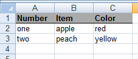
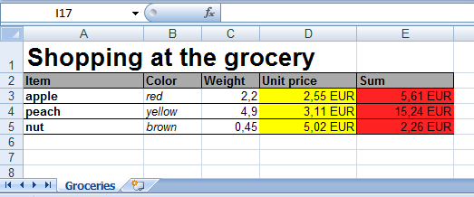
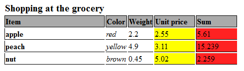

Table generator
Html table generation
The HtmlTable is a helper class to create pure html tables easy way.
Let's see pure example where a 3x2 sized table will be generated with header texts.
Let's see the generation of this table:
| count | type | color |
|---|---|---|
| one | apple | red |
| two | peach | yellow |
You can generate this table with the following codes:
//One using mode
$t1 = new HtmlTable();
$t1->name('customname');
$t1->heads(['count','type','color']);
$t1->cellss([['one','apple','red' ],
['two','peach','yellow' ]]);
$t1->opts(['border'=>1,'class'=>'mytable']);
print $t1->get();
//An another using mode
print h("table") //helper function, which equivalent to new HtmlTable()
->name('customname')
->opts(['border'=>1,'class'=>'mytable'])
->heads(['count','type','color'])
->cells(['one','apple','red' ])
->nrow()
->cells(['two','peach','yellow'])
->get();
The HtmlTable class stores every settings and cell in it's internal sate.
As seen above the html generation is done by get() method.
The following functions can be used to define the table:
- name($name)
- Set the name of the table object. This name is usually useless but can be used in
table_gethook where the hook receives this name to distinguish tables.
- Set the name of the table object. This name is usually useless but can be used in
- opts(array $o)
- Sets some options of the generated table like border and css class. The function should receive an associative array where the values can be:
"border"=integerthe border attribute of the table"class"=stringthe css class of the table"style"=stringthe style attribute of the table (Custom css code of the table)"formatter"=trueenable some additional functionality of cell's string formatting.- Every cell modifier option can be used here jointly with the
"type" => "uni"option.
(Most option set there is automatically coverted to"style"and merged with the original"style"value.)
- Sets some options of the generated table like border and css class. The function should receive an associative array where the values can be:
- nrow(array $opts = [])
- Start a new row in table. Every time when this function called a new row will generated in table. If this function called two times an empty row is generated. The function can receive an associative array where the values can be:
"class"=stringthe css class of the tr tag"style"=stringthe style attribute of the tr tag- Every cell modifier option can be used here jointly with the
"type" => "uni"option.
(Most option set there is automatically coverted to"style"and merged with the original"style"value.)
- Start a new row in table. Every time when this function called a new row will generated in table. If this function called two times an empty row is generated. The function can receive an associative array where the values can be:
- head($h,array $opts)
- Sets the next header cell name. The
$optsparameter is same that theopts()function can receive.
- Sets the next header cell name. The
- heads($hs,array $opts)
- Sets all header name with one array.
- cell($c,array $opts)
- Sets the next cell of the table.
- cells($cs,array $opts)
- Sets one row of the table with array (of cells).
- cellss($cs,array $opts)
- Sets more row of the table with a two dimensional array.
- get()
- Generates the html code of the table.
- setCallback($name, callable $callback)
- You can add a named callback to the object and run it later with the given name. This callbacks can used as macros. This callback mechanism works same in HtmlTable,HtmlForm and ExcelXmlDocument. It possible to set different callbacks with same names to achieve different mechanism on same event.
- The callbacks receives two parameters:
- The object reference where the callback is set (HtmlTable,HtmlForm and ExcelXmlDocument)
- The optional parameter passed to
run()
- Example:
$t->setCallback("sep",function($x,$p) { $x->nrows(2); return ''; });
- run($name, $parameter = null)
- Calls the callback by name which set through
setCallback() - The
$parameteris an optional parameter passed directly to the callback - Example:
$t->run("sep");
- Calls the callback by name which set through
Excel output generator
The ExcelXmlDocument class works similar way than HtmlTable but ExcelXmlDocument generates
Microsoft Office XML formats.
You can generate arbitrary formatted tables (even with formulas) and save to XML files
which can directly opened in spreadsheets.
Let's see a complete example where the CodKep generates the following small formatted table:

You can generate this table with the following codes:
function hook_mymodule_defineroute()
{
$r = [];
$r[] = [
'path'=> 'sampleexcelxmlfile',
'callback' => 'rc_sampleexcel_x',
'type' => 'raw', //This path will generate Microsoft Office XML, not HTML
];
return $r;
}
function rc_sampleexcel_x()
{
$x = new ExcelXmlDocument();
$x->setHtmlHeaders('sample.xml');
$x->name('customname');
//Header cells, bold fonts and underlined with background color
$x->cells(['Number','Item','Color'],
['strong' => 'yes',
'border' => 'bottom',
'background-color' => '#aaaaaa']);
//Value cells
$x->cellss([['one','apple','red' ],
['two','peach','yellow' ]]);
return $x->get();
}
The ExcelXmlDocument class stores every settings and cell in it's internal sate.
As seen above the xml output generation is done by get() method.
The following functions can be used to build the spreadsheet:
Methods of ExcelXmlDocument class:
- name($name)
- Give the name of the spreadsheet. This name will be the name of the spreadsheet visible in the bottom tabs of excel.
- setTitle($title)
- Same as
name($name)
- Same as
- nrow(array $opts = [])
- Start a new row in table. Every time when this function called will generate a new row in table. The
$optsarray passed here will be the default options of cells located in the following row.
- Start a new row in table. Every time when this function called will generate a new row in table. The
- nrows($count = 1,array $opts = [])
- Start
$countnew row in table. Every time when this function called will generate$countnew row in table.
- Start
- cell($c = '', array $opts = [])
- Sets the next cell of the table. The
$optsdetailed later.
- Sets the next cell of the table. The
- cells(array $cs, array $opts = [])
- Sets one row of the table with array (of cells).
- cellss(array $cs, array $opts = [])
- Sets more row of the table with a two dimensional array.
- head($hs, array $opts = [])
- Sets the next cell name. The
$optsdetailed later.
- Sets the next cell name. The
- heads(array $hs, array $opts = [])
- Sets all header cell with one array.
- setOrientationPortrait()
- Set the default printable format of the spreadsheet to portrait.
- setOrientationLandscape()
- Set the default printable format of the spreadsheet to landscape.
- get()
- Generates the xml code of the spreadsheet.
- opts(array $opts)
- This function sets a default options of the table cells. The options set in
nrow()function will overwrite these, while the options passed incell()andhead()will overwrite both.
- This function sets a default options of the table cells. The options set in
- setCallback($name, callable $callback)
- You can add a named callback to the object and run it later with the given name. This callbacks can used as macros. This callback mechanism works same in HtmlTable,HtmlForm and ExcelXmlDocument. It possible to set different callbacks with same names to achieve different mechanism on same event.
- The callbacks receives two parameters:
- The object reference where the callback is set (HtmlTable,HtmlForm and ExcelXmlDocument)
- The optional parameter passed to
run()
- Example:
$t->setCallback("sep",function($x,$p) { $x->nrows(2); return ''; });
- run($name, $parameter = null)
- Calls the callback by name which set through
setCallback() - The
$parameteris an optional parameter passed directly to the callback - Example:
$t->run("sep");
- Calls the callback by name which set through
The $opts parameter of the opts(),cell(),cells(),cellss() and head(),heads() and
nrow() function is an associative array with the following possible options:
"height" => height_number- The height of the cell's row."xheight" => height_number- The height of the cell's row. This option affects ExcelXml document only."theight" => height_number- The height of the cell's row. This option affects HtmlTable only."width" => width_number- The width of the cell's row."xwidth" => width_number- The width of the cell's row. This option affects ExcelXml document only."twidth" => width_number- The width of the cell's row. This option affects HtmlTable only."formula" => formulastring- Specify a formula of the cell- Examples:
"=RC[-1]*2"- The cell same row and one column less multiplied with 2"=R[-1]C*2"- The cell in same column and one row less multiplied with 2"=R3C3*2"- The cell with absolute row 3 and column 3 multiplied with 2
- Examples:
"t" => typestring- The type of the cell- Possible values of
typestring"str"- String"num"- Number"dat"- Date, You also have to specify the"numberformat" => "Short Date"and give the data in ISO dateyyyy-MM-dd!
- Possible values of
"colspan" => spannumber- Merge more horizontal cells to one."xcolspan" => spannumber- Merge more horizontal cells to one. This option affects ExcelXml document only."tcolspan" => spannumber- Merge more horizontal cells to one. This option affects HtmlTable only."wrap" => wrapstr- Sets the wrapping of the cells.- Possible values of
wrapstr"on"- Sets cell wrapping on."off"- Sets cell wrapping off.
- Possible values of
"vertical" => verticalalignstr- Sets the vertical align of the specified cells.- Possible values of
verticalalignstr"top"- Sets the vertical align to top."center"- Sets the vertical align to center."bottom"- Sets the vertical align to bottom.
- Possible values of
"horizontal" => horizontalalignstr- Sets the horizontal align of the specified cells.- Possible values of
horizontalalignstr"left"- Sets the horizontal align to left."center"- Sets the horizontal align to center."right"- Sets the horizontal to right.
- Possible values of
"border" => borderstr_or_array- Sets the borders of the cells.- The
borderstr_or_arraycan be a simple string or an array with the combination of the following values:"none"- Sets no border."all"- Sets all borders top, right, bottom, left."top"- Sets the top border."bottom"- Sets the bottom border."left"- Sets the left border."right"- Sets the right border.
- Example 1:
"border" => "all" - Example 2:
"border" => ["top","left"]
- The
"borderweight" => 0or1or2or3- Sets the border width from 0 to 3."background-color" => colorstring- SetsThe background color of the cell- The
colorstringhave to contains html color specification (In #RRGGBB format). - Example:
"background-color" => "#RRGGBB"
- The
"strong" => "yes"- Sets bold font"italic" => "yes"- Sets italic font"underline" => "yes"- Sets the font to underlined."size" => size- Sets the point size of the font tosize."xsize" => size- Sets the point size of the font tosize. This option affects ExcelXml document only."tsize" => size- Sets the point size of the font tosize. This option affects HtmlTable only."color" => colorstring- Sets the color of the font- The
colorstringhave to contains html color specification (In #RRGGBB format). - Example:
"color" => "#RRGGBB"
- The
"numberformat" => numfmtstr- Sets the format of the numbers- An example of this:
- "#,##0.00\ [$EUR];[Red]\-#,##0.00\ [$EUR]']" - Will set "34,00 EUR"
- An example of this:
These options above can be translated to options works with HtmlTable class with table_options_translator()
Complex table generation example
This example shows how to generate a complex table with colors, borders special number formats, and how to use formulas.

The generation of the excel table above done with this code:
x = new ExcelXmlDocument();
$x->setHtmlHeaders('sample2.xml');
$x->name('Groceries');
//Title
$x->cell('Shopping at the grocery',
['size' => 20,'strong' => 'yes','wrap' => 'off']);
$x->nrow();
//Header
$x->cells(['Item','Color','Weight','Unit price','Sum'],
['strong' => 'yes',
'border' => 'all',
'background-color' => '#aaaaaa']);
$x->nrow();
//Value cells
$col_1_opts = ['width' => 100,
'strong' => 'yes',
'border' => ['left','bottom']];
$col_2_opts = ['border' => 'bottom',
'italic' => 'yes'];
$col_3_opts = ['t' => 'num',
'border' => 'bottom'];
$col_4_opts = ['t' => 'num',
'width' => 80,
'border' =>'bottom',
'background-color' => '#ffff00',
'numberformat' => '#,##0.00\ [$EUR];[Red]\-#,##0.00\ [$EUR]'];
$col_5_opts = ['t' => 'num',
'width' => 80,
'formula' => '=RC[-1]*RC[-2]',
'border' => ['left','bottom'],
'background-color' => '#ff2222',
'numberformat' => '#,##0.00\ [$EUR];[Red]\-#,##0.00\ [$EUR]'];
$x->cell('apple' ,$col_1_opts);
$x->cell('red' ,$col_2_opts);
$x->cell('2.2' ,$col_3_opts);
$x->cell('2.55' ,$col_4_opts);
$x->cell('' ,$col_5_opts);
$x->nrow();
$x->cell('peach' ,$col_1_opts);
$x->cell('yellow',$col_2_opts);
$x->cell('4.9' ,$col_3_opts);
$x->cell('3.11' ,$col_4_opts);
$x->cell('' ,$col_5_opts);
$x->nrow();
$x->cell('nut' ,$col_1_opts);
$x->cell('brown' ,$col_2_opts);
$x->cell('0.45' ,$col_3_opts);
$x->cell('5.02' ,$col_4_opts);
$x->cell('' ,$col_5_opts);
$x->nrow();
print $x->get();
Convert Excel XML tables to HTML tables
You can use the table_options_translator() function to translate the cell options of ExcelXmlDocument
to options works with cells of HtmlTable.
Most option are translated to CSS style to the html table looks similar as spreadsheet.
table_options_translator(array $opts,array $additional = [],$sac_omode = false)
The parameters of the function:
- The
$optsarray will be translated intoHtmlTableoptions. - The
$additionalparameter can hold other options which will be added to the result array. - If the
$sac_omodeparameter is true, the function only translate options which generate "style" and "class" typed options.
The return array of this function is directly usable as cell option in HtmlTable's methods.
Let's see an example where the previous examples table's code are minimally rewritten to show similar table in html

The code shows this table above (All options passed to cells are same as above):
$x = new HtmlTable();
$x->name('Groceryes');
//Title
$x->cell('Shopping at the grocery',
table_options_translator(
['size' => 20,'strong' => 'yes','wrap' => 'off']));
$x->nrow();
//Header
$x->cells(['Item','Color','Weight','Unit price','Sum'],
table_options_translator(
['strong' => 'yes',
'border' => 'all',
'background-color' => '#aaaaaa']));
$x->nrow();
//Value cells
$col_1_opts = table_options_translator(
['width' => 100,
'strong' => 'yes',
'border' => ['left','bottom']]);
$col_2_opts = table_options_translator(
['border' => 'bottom',
'italic' => 'yes']);
$col_3_opts = table_options_translator(
['t' => 'num',
'border' => 'bottom']);
$col_4_opts = table_options_translator(
['t' => 'num',
'width' => 80,
'border' =>'bottom',
'background-color' => '#ffff00',
'numberformat' => '#,##0.00\ [$EUR];[Red]\-#,##0.00\ [$EUR]']);
$col_5_opts = table_options_translator(
['t' => 'num',
'width' => 80,
'formula' => '=RC[-1]*RC[-2]',
'border' => ['left','bottom'],
'background-color' => '#ff2222',
'numberformat' => '#,##0.00\ [$EUR];[Red]\-#,##0.00\ [$EUR]']);
$x->cell('apple' ,$col_1_opts);
$x->cell('red' ,$col_2_opts);
$x->cell(2.2 ,$col_3_opts);
$x->cell(2.55 ,$col_4_opts);
$x->cell(2.2*2.55 ,$col_5_opts);
$x->nrow();
$x->cell('peach' ,$col_1_opts);
$x->cell('yellow',$col_2_opts);
$x->cell(4.9 ,$col_3_opts);
$x->cell(3.11 ,$col_4_opts);
$x->cell(4.9*3.11 ,$col_5_opts);
$x->nrow();
$x->cell('nut' ,$col_1_opts);
$x->cell('brown' ,$col_2_opts);
$x->cell(0.45 ,$col_3_opts);
$x->cell(5.02 ,$col_4_opts);
$x->cell(0.45*5.02 ,$col_5_opts);
$x->nrow();
print $x->get();
Automatic conversion of options
The HtmlTable can do this option translation automatically.
If the options array contains the "type" => "uni" element the HtmlTable automatically call
the table_options_translator() on whole option array.
Note: Most options are converted to css style.
The result of this that we can generate Excel XML and HTML tables with same codes with minimal difference. Look the next example which generate exactly same tables than previous, but uses same codes to generate both output:
//If this variable is
// TRUE - This code generates an Excel XML table
// FALSE - This code generates a HTML table
$excel_or_html = true;
$x = $excel_or_html ? (new ExcelXmlDocument()):(new HtmlTable());
if($excel_or_html)
$x->setHtmlHeaders("sameashtml.xml");
$x->name('Groceries');
//Title
$x->cell('Shopping at the grocery',
['type'=>'uni','size' => 20,'strong' => 'yes','wrap' => 'off']);
$x->nrow();
//Header
$x->cells(['Item','Color','Weight','Unit price','Sum'],
['type'=>'uni',
'strong' => 'yes',
'border' => 'all',
'background-color' => '#aaaaaa']);
$x->nrow();
//Value cells
$col_1_opts = ['type' => 'uni',
'width' => 100,
'strong' => 'yes',
'border' => ['left','bottom']];
$col_2_opts = ['type' => 'uni',
'border' => 'bottom',
'italic' => 'yes'];
$col_3_opts = ['type' => 'uni',
't' => 'num',
'border' => 'bottom'];
$col_4_opts = ['type' => 'uni',
't' => 'num',
'width' => 80,
'border' =>'bottom',
'background-color' => '#ffff00',
'numberformat' => '#,##0.00\ [$EUR];[Red]\-#,##0.00\ [$EUR]'];
$col_5_opts = ['type' => 'uni',
't' => 'num',
'width' => 80,
'formula' => '=RC[-1]*RC[-2]',
'border' => ['left','bottom'],
'background-color' => '#ff2222',
'numberformat' => '#,##0.00\ [$EUR];[Red]\-#,##0.00\ [$EUR]'];
$x->cell('apple' ,$col_1_opts);
$x->cell('red' ,$col_2_opts);
$x->cell(2.2 ,$col_3_opts);
$x->cell(2.55 ,$col_4_opts);
$x->cell(2.2*2.55 ,$col_5_opts);
$x->nrow();
$x->cell('peach' ,$col_1_opts);
$x->cell('yellow',$col_2_opts);
$x->cell(4.9 ,$col_3_opts);
$x->cell(3.11 ,$col_4_opts);
$x->cell(4.9*3.11 ,$col_5_opts);
$x->nrow();
$x->cell('nut' ,$col_1_opts);
$x->cell('brown' ,$col_2_opts);
$x->cell(0.45 ,$col_3_opts);
$x->cell(5.02 ,$col_4_opts);
$x->cell(0.45*5.02 ,$col_5_opts);
$x->nrow();
print $x->get();
The result of the code above with $excel_or_html = true :
The result of the code above with $excel_or_html = false :
You can use this functionality for SQL queries with to_table() function.
The to_table() uses the ExcelXmlDocument and HtmlTable classes to format query results.
Read Query formatter documentation to learn it.